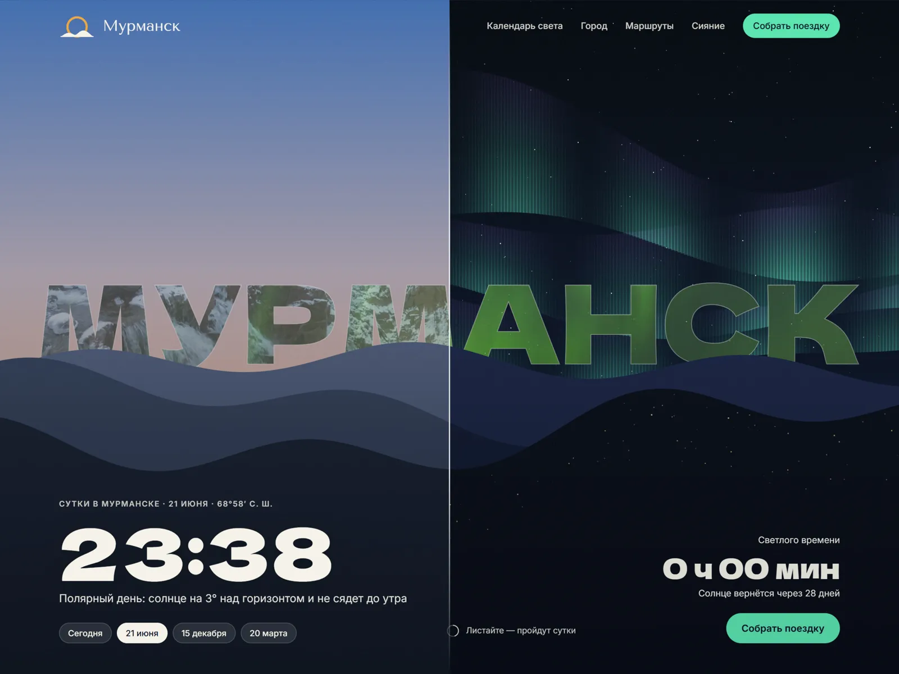
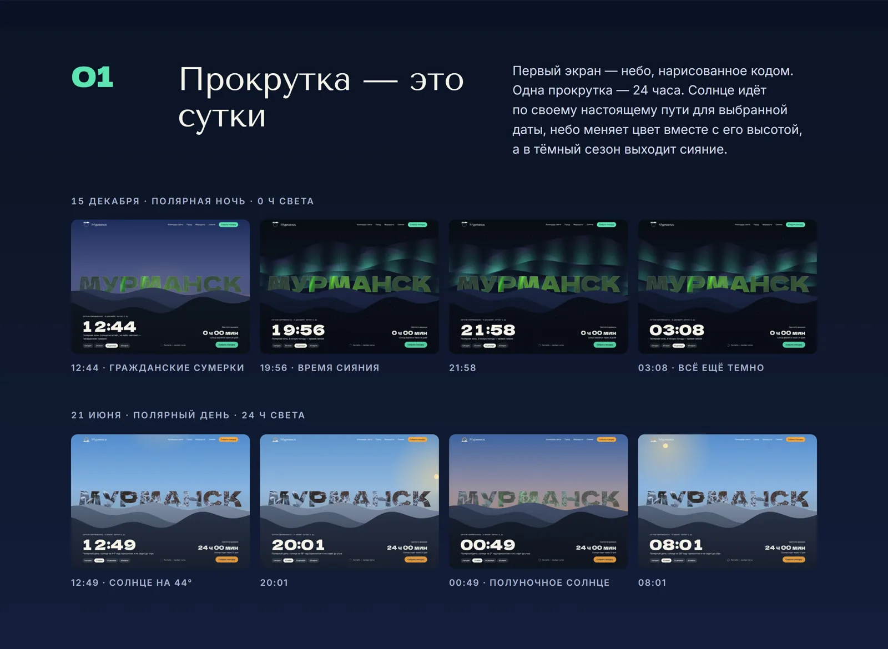
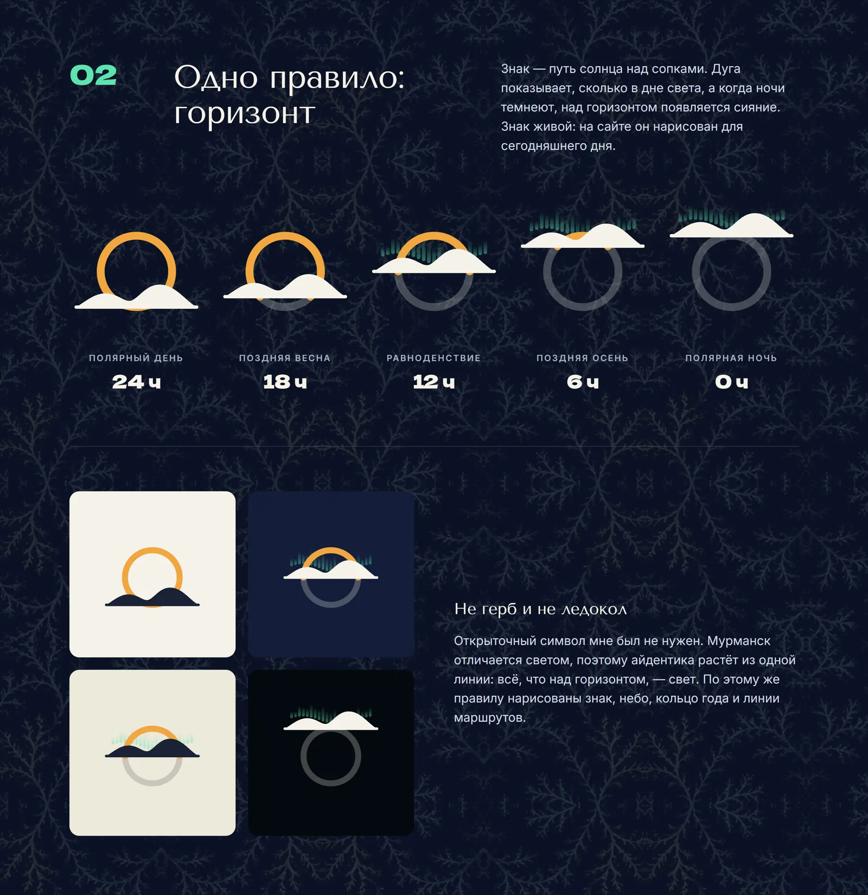
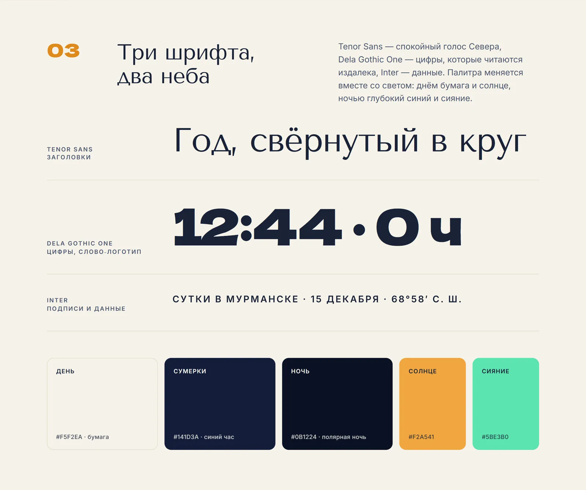
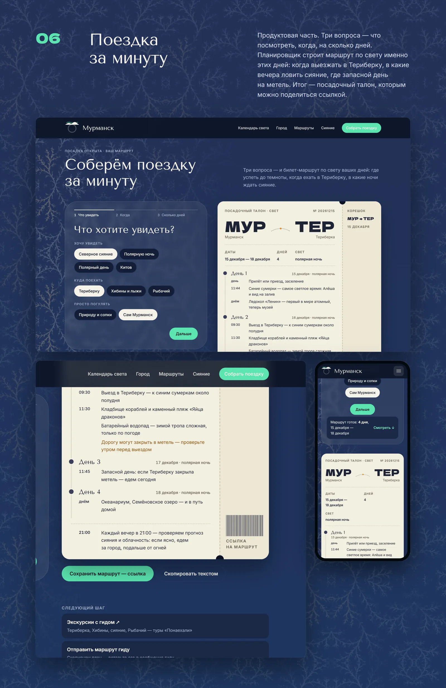
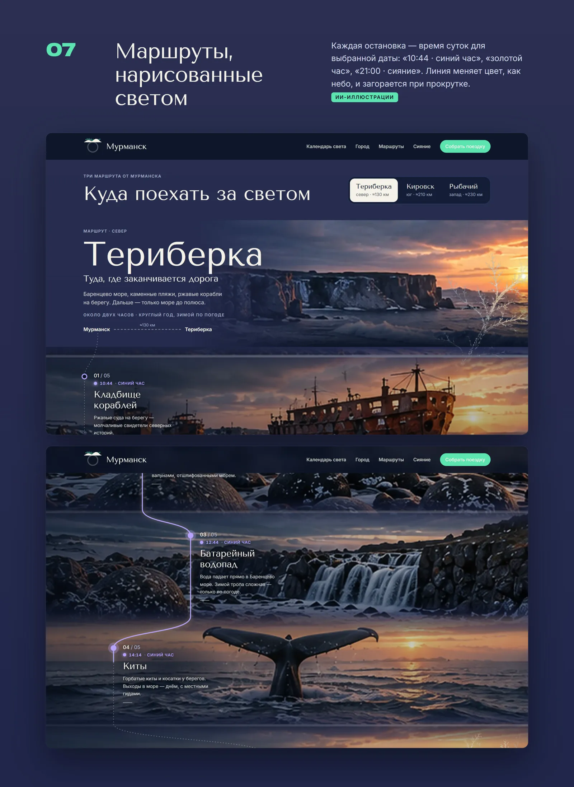
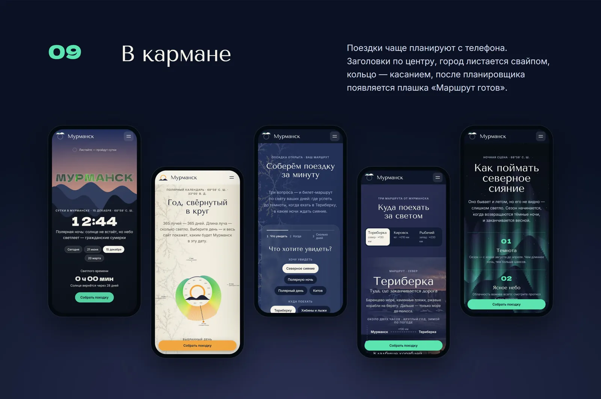
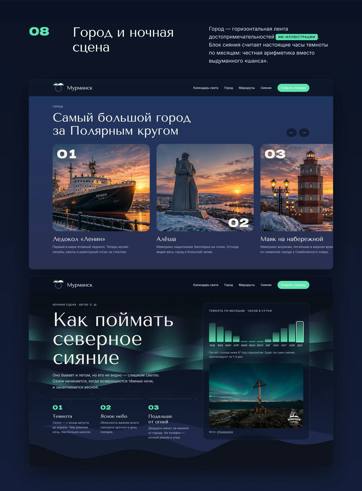
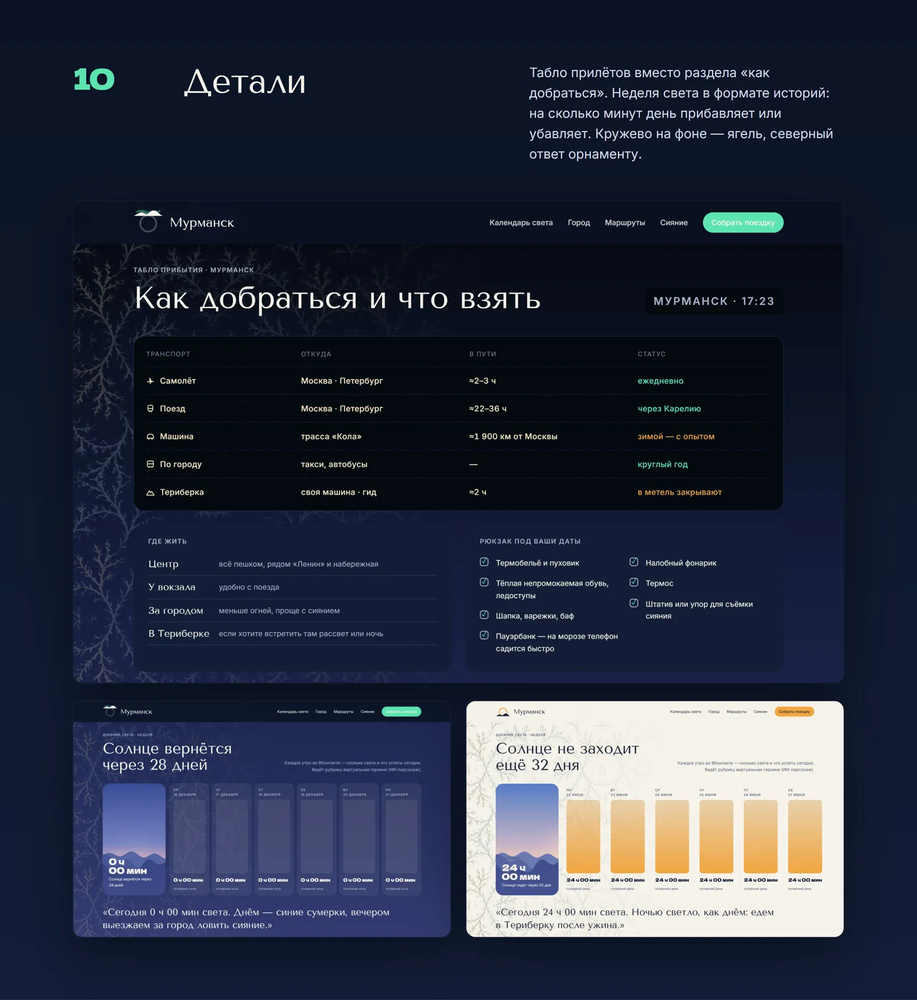

Сайт, который живёт по полярному свету
Туристу на Севере важно одно: сколько будет света и когда ехать за сиянием. Ответы разбросаны по десятку сайтов. Этот сайт показывает свет, а не рассказывает о нём, и собирает поездку под световой день.
Туристу нужен не город, а свет
Я живу в Мурманске, и гости спрашивают меня об одном и том же. Не «что посмотреть» — это есть на любом сайте, — а «когда ехать». Гипотеза: если сайт сразу отвечает на эти вопросы, им пользуются, а не просто листают.
- Сколько будет светло в мои даты — и будет ли вообще
- Когда шанс увидеть сияние, а когда приезжать бессмысленно
- Что я успею за 2–7 дней: Териберка, киты, Хибины
Сайт показывает свет, а не описывает
Полярная ночь — примерно со 2 декабря по 11 января, полярный день — с 22 мая по 22 июля. Цифры не передают, каково это. Поэтому прокрутка — это сутки, а небо меняется так, как меняется свет за окном в выбранный день.


Одно правило: горизонт
Из двух направлений выбрала «Полярный календарь», а не морскую «Лоцию»: такая идея возможна только в Мурманске. Знак — сопки и путь солнца: что выше линии горизонта, то и свет сегодня.


От открытки к инструменту
Каждая версия отвечала на вопрос, который не закрыла предыдущая.
Версия 1
Шаблон
Карточки «что посмотреть». Ничем не отличался от любого туристического сайта и не отвечал на главный вопрос — когда ехать.
Версия 2
Живое небо
Сайт стал узнаваемым, но его смотрят один раз, как красивую открытку. Свет видно, а сделать с этим знанием нечего.
Версия 3
Инструмент
Кольцо года и планировщик отвечают на «когда ехать и что успею». Ради этого на сайт возвращаются.
Кольцо года
365 лучей — 365 дней, длина луча — сколько длится светлое время. Выбираешь день, и весь сайт показывает Мурманск в эту дату. Работает мышкой, касанием и с клавиатуры.
Поездка за минуту
Цели (сияние, киты, Териберка, Хибины), даты или «подобрать лучшее время», 2–7 дней — и маршрут по дням с временем по солнцу. Если цель не подходит к датам, планировщик говорит об этом и объясняет почему. Маршрутом можно поделиться ссылкой.


Красота мешала: 5 из 10 за удобство
Я попросила Claude Code разобрать сайт как UX-эксперт — глазами коммерческого продукта, а не витрины. Оценка за удобство — 5 из 10: длинные закреплённые экраны, заставка, мелкая навигация. Это экспертный разбор, а не тест с людьми — он следующий шаг.
- Быстрее к делу. Закреплённый экран «Сутки» стал почти вдвое короче, планировщик поднялся сразу под кольцо года, появилась кнопка «Собрать поездку», заставка сократилась до 2 секунд и показывается один раз.
- Доступно всем. Управление с клавиатуры, видимый фокус, контраст всех текстов, заголовки для экранного диктора. Выбор даты больше не перебрасывает наверх.
- Можно доверять. Дорога, поезда, сезон китов и правила въезда сверены, у фото указаны авторы, кадры от нейросети подписаны.
Что вычеркнула и почему
Многое было эффектно, но мешало главному — понять свет и спланировать поездку.
Айдентика «Лоция»
Морская карта и флаги
Красиво, но подходит любому портовому городу. Флаги остались идеей для пасхалки.
Раскрытие кадра Териберки
Эффекты ради эффекта
Закрепление и раскрытие удлиняли путь. Убрала вместе с горизонтальной лентой без стрелок.
Коды МУР → TER латиницей
Чужие коды аэропортов
Латинские сокращения совпадали с настоящими аэропортами. На «талоне» поездки теперь кириллица: МУР → ТЕР.
Узор, нарисованный кодом
Абстрактное «кружево»
Заменила на узор ягеля — оленьего мха: местный символ вместо абстракции.
Четвёртый шрифт
Моноширинный для данных
Цифры перешли на Inter с моноширинными цифрами. Три шрифта — три роли.
Номера разделов 01–09
Лишняя навигация
Сайт читают сверху вниз, номера ничего не давали. Остались заголовки.
Поездку планируют с телефона
Кольцо работает касанием, город листается свайпом, после планировщика появляется плашка «Маршрут готов». Фото — с Unsplash, Wikimedia и от туроператора «Понаехали» с указанием авторов; кадры от нейросети подписаны «ИИ».



Внимание держит эффект, а остаются ради пользы
Сутки на прокрутке привлекают внимание, но без планировщика сайт оставался открыткой. Следующий шаг — проверить гипотезу на людях, которые действительно собираются на Север.
- Идея, айдентика, сайт с живым небом
- Планировщик поездки, кольцо года, маршруты по свету
- Экспертный разбор, правки, проверка фактов и прав на фото
- Опросить 3–5 человек, которые планируют поездку на Север
- Заявка гиду или туроператору прямо из маршрута
- Карта маршрута и прогноз погоды